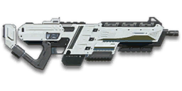

← Back to the AR-100 comparison
Sage Guide · Nanite Systems Operatives · Combat Medic
The rifle every Nanite Systems Operative starts with. No certs spent, no unlocks needed — this page teaches you to win fights with it today.
The one-line verdict: a steady, honest all-rounder that plays like the NSO in gun form: the tightest sideways walk of the four starters, the longest full-damage reach, and a quick 1.8-second reload — but the slowest bullets and the slowest kill time of the four. It rewards good aim and short bursts, and punishes spray-and-pray. Fight between 10 and 40 metres and it will carry you.

The AR-100 · Nanite Systems Operatives · 30-round magazine · auto-granted
Most new players die in a way they cannot explain: they ran in, aimed at an enemy, held the trigger — and hit nothing. It is not your aim. It is the cone. This gun fires inside a cone of spread that gets huge while you move and tiny when you stop and aim. Start a fight from the big cone and you miss shots you aimed perfectly. Start from the tiny one and the same fight is a kill.
Same enemy, same 25 m, same player — the only difference is how the fight starts.
Why: firing from a sprint starts at the maxed 7.0° cone. Pressing aim-down-sights while you hold the trigger does not reset the bloom — the cone only shrinks once you release the trigger and let it settle. So every bullet goes wide, no matter how steady your crosshair looks.
Three beats, in order. No step skipped, no step rushed.
How: release the sprint key and let your feet settle (~0.3 s), press right mouse to aim down sights (~0.15 s), then press the trigger. Starting from the aimed cone of 0.10°, your first shots land where your crosshair sits.
Under about 8 m, skip all three beats: fire from the hip while strafing. At that distance the enemy is big enough to fill your standing hip cone (3.0°, about 0.28 m wide at 8 m), and the movement speed of hipfire is worth more than the tightest cone. This is the one exception — past 8 m, stop and aim.
This rifle's cone is already small when you aim — 0.10°, the tightest starting cone of the four starter rifles. The problem is never the gun; it is the 7.0° cone you start in when you sprint. The gap between those two numbers is the whole lesson: stop first, and the gun does the rest.
A Medic has no overshield to hide behind. You win fights by landing the first shots — and the first shots only land when the cone is small.
Every enemy infantry has 1,000 health (500 shield + 500 health). Your bullet does 143 damage up close, fading to 112 at long range. Headshots count double, leg shots count less (×0.9). That gives you three numbers worth memorising:
| Range | Damage per bullet | Headshots | Chest shots | Leg shots | vs Heavy overshield (chest) |
|---|---|---|---|---|---|
| Close · 0–15 m | 143 | 4 | 7 | 8 | 11 |
| Mid · 16–57 m | 143→125 | 4 | 8 | 9 | 12 |
| Far · 58 m+ | 125→112 | 5 | 9 | 10 | 13 |
Perfect-accuracy times to kill: 4 headshots ≈ 0.27 s, 7 chest shots ≈ 0.54 s up close. In a real fight you will miss — count on it, and count your bullets.
Full power to 15 m, then a steady slide to 125 at 57 m and 112 at 90 m. The gold line shows Soft Point Ammunition, which stretches full power to 20 m.
Move the slider to a distance and see what the fight demands there. The table answers the question you actually ask mid-fight: how many hits do I need, and how long will they take?
Aim: hipfire. Move: strafe (A/D) the whole fight.
Inside 8 m the enemy is big enough to fill your hip cone. The AR-100 has good hip accuracy for an assault rifle. Strafe side to side (A/D) while firing and let your 667 RPM do the talking. Don't aim down sights here — the sight picture slows you down more than it helps.
Aim: ADS, chest. Move: strafe in short bursts of fire.
Full 143 damage, tight handling, 667 RPM. Strafe while scoped and keep the burst short — 4 head hits end the fight in just over a quarter of a second. This is where you win most of your fights.
Aim: ADS, chest. Move: stand still or crouch when you can.
Damage is sliding toward 125, and the cone grows 0.05° with every shot. Fire in bursts of 5, release, re-aim, fire again. The recoil climbs almost straight up (±1° angle, barely any sideways drift), so pull your mouse gently down. Crouch or stand still when you can — both tighten your shots.
Aim: ADS, chest. Move: still or crouched. Fire: single taps, one shot at a time.
At 112 damage you need 9 chest shots to kill, and each miss costs you a tenth of a second you cannot afford. Take these shots at stationary or fleeing targets, medics reviving, and engineers on turrets. Otherwise, your better play is to close the distance behind cover. Knowing when not to shoot is a skill too — and a Medic who arrives alive revives the squad.
The cone — the spread your bullets land inside — depends on what your body is doing. Your first shots are always the most accurate. Every shot after the first makes the cone bigger, by a fixed amount, until you stop firing and let it settle.
| Stance | Starting cone | What it means |
|---|---|---|
| Aimed (ADS), standing still | 0.10° | Your best accuracy. Plant your feet and every bullet goes where the crosshair is. |
| Aimed (ADS), crouched | 0.10° | Same cone as standing, but you are a smaller target and the rifle is steadier — use it behind cover. |
| Aimed (ADS), strafing | 0.25° | The moving floor while scoped — two and a half times the planted cone — and you move at half speed (0.5×). Strafe between bursts to stay hard to hit; plant your feet during each burst. |
| Hipfire, standing still | 2.0° | Fine up close (under ~8 m). Past that, bullets start missing the chest. |
| Hipfire, crouched | 1.5° | The tightest hipfire cone — useful when an enemy rounds a corner and you have no time to aim. |
| Hipfire, moving | 2.5° | The loosest cone you should ever fire from. Only inside ~5 m, only because the enemy is that close. |
One more number worth knowing: your ADAD window is 3 aimed shots (5 from the hip). Standing still, your first 3 aimed shots are the free window — after 3 shots your cone has grown to 0.25°, exactly the 0.25° moving minimum, so starting to strafe then costs nothing. The cone still grows during those 3 shots; the window is about the switch to moving, not about bloom pausing. (This is the Ideal ADAD rhythm: 3 free still shots, then move.)
| Mode | When | How |
|---|---|---|
| Mag dump (hold trigger) | Under ~8 m, hipfire | Hold the trigger and ride the recoil down. Past ~8 rounds you are spraying — and the 30-round mag is gone in 2.6 seconds. |
| Burst of 5 | 8–50 m, aimed | Fire 5, release for a beat (~0.15 s), fire 5 again. This is your default. Each release resets the cone, so every burst starts at 0.10°. |
| Tap-fire (1 shot) | 50 m+, aimed | One click, one shot, re-aim. Slow, but every bullet has a chance to hit. At this range a missed shot is worse than a slow one. |
Hold FIRE and watch the target. The cone grows with every shot — that is bloom, 0.05° per bullet aimed. Short bursts keep it small; holding the trigger makes the target a blur. Release for a beat and it shrinks back. This is the whole game, in one window.
Simulation: 667 RPM, 0.10° starting cone, 0.05° bloom per shot, target at 30 m. The simulator is a teaching aid — it uses the same numbers as the tables above, but it does not model recoil climbing the sights off target.
Three pictures carry most of this guide. The first shows how big your hipfire spread really is. The second shows the rhythm to fire in. The third shows the two sights you will actually buy.
The circles are drawn to scale against a 0.5 m chest: this is how wide your bullets spread at 8 m from the hip.
Read it this way: standing still, the 0.28 m ring roughly covers the chest — at 8 m your hipfire is honest. Moving, the 0.35 m ring spills over the edges — shots start missing. With a laser sight the ring shrinks to 0.19 m, comfortably inside the chest. That is the whole case for the laser sight, in one picture.
The rhythm: fire in bursts, let the cone shrink, fire again. Never hold the trigger through the whole magazine.
Read it this way: the target pattern is bursts of about 5 rounds — the ideal burst length. Short bursts keep your cone near 0.10°; a held trigger lets bloom (0.05° per shot aimed, 0.10° from the hip) push it past the size of the target. The 0.15-second pause costs almost nothing in kill time and buys back all of your accuracy.
The default sight. Wide view, fast target finding.
Best for: indoors, point holds, tracking a moving enemy at close range.
Your first purchase. Twice the size, same sight picture.
Best for: open ground, 25–50 m fights, landing headshots.
That's the whole 30-cert decision from section 06 in one picture: 1x for awareness, 2x for precision. Most veterans carry both and swap per base — indoors 1x, open ground 2x.
Every attachment slot has a job. The ratings below are for this gun, for a new player — a "good" attachment is one that helps you in fights you actually take. The NS-11A is not the starter rifle: it costs 1,000 certs and is a separate weapon. The AR-100 is the free NSO starter — every cert you spend here stays on this gun.
A clean blue-dot reflex sight with no zoom. This is the sight the gun ships with — use it until you buy the 2x.
A 2x scope. The enemy is twice as big in your sight picture — headshots at 25–50 m become far easier.
Highlights warm bodies through smoke and darkness, out to ~80 m.
A 3.4x scope. More zoom than this rifle wants.
Cuts vertical recoil by 30% (0.24° becomes 0.17° per shot). Your hipfire cone grows 15% and enemies see you on the minimap from 35 m further away.
Cuts vertical recoil by 30% (0.24° becomes 0.17° per shot) — the same job as the Compensator, so buy one or the other, never both.
Tighter hipfire bloom, but the aimed recoil grows 20%.
No muzzle flash, no minimap signature. But your bullets fly 15% slower (550 → 468 m/s) and damage falls off 20 m sooner (90 m becomes 70 m).
Hides the muzzle flash only — no change to the gun's handling. It does make you visible on the minimap from 15 m further away.
Cuts side-to-side recoil by 25% (horizontal tolerance 0.2° → 0.15°). Your sideways walk is already the tightest of the four starters, and this makes it tighter outright. Cost: the weapon swap is 0.15 s slower.
Tightens the hipfire cone by a third (2.0° becomes 1.34° standing still — about 0.19 m of spread at 8 m instead of 0.28 m).
Cuts the first-shot kick by 60% (the first bullet jumps 0.26° instead of 0.64° — your first-shot kick is a hefty 2.66×, so this one actually earns its keep here) at the cost of 10% more sideways recoil.
5 extra rounds per magazine (30 → 35). Cost: the weapon takes 15% longer to raise and lower (0.65 s → 0.75 s).
Reveals cloaked infiltrators in a short cone. It does not change your damage, recoil, or cone in any way.
Full 143 damage now reaches to 20 m instead of 15 m — the longest full-damage reach of the four starters gets longer still. Cost: bullets fly 10% slower (550 → 495 m/s), so lead moving targets a touch more.
Bullets fly 10% faster (550 → 605 m/s) and minimum damage now holds to 110 m instead of 90 m — but full damage ends 2 m sooner (15 m becomes 13 m).
Four ready builds. The first costs nothing. The second is the one to aim for. The other two are for specific jobs.
Perfectly usable. The AR-100 needs no attachments to kill — it needs the three beats from section 01 and bursts of 5. Play this until you have 30 certs.
The build this guide is written around. 2x sight for headshots, Soft Point for the 20 m full-damage reach, Forward Grip for the tightest sideways walk in the game. Good at every range a Medic fights at.
For bio labs and capture points. Hipfire cone down to 1.34°, full damage to 20 m, and you never need to aim down sights in the rooms where the fighting happens.
For flanking alone. No minimap signature, no muzzle flash, and the grip keeps the long-range shots honest. Accept the slow bullets (468 m/s) — you are shooting people who don't know you're there.
Killing fast is not about flicking. It is about a short list of habits, done the same way every fight.
Section 01, every fight, no exceptions past 8 m. The 0.10° cone is your biggest advantage — don't throw it away by firing from a sprint.
4 headshots kill in 0.27 s; 7 chest shots take 0.54 s. That is twice as fast. Aim at the head, and the chest hits you land on the way still count — a mix of 1 head + 5 chest shots kills in 6 shots, faster than 7 chest alone.
Five rounds, release for a beat, five more. The cone resets between bursts, so every burst starts at 0.10°. Holding the trigger through the magazine is how you lose fights you were winning.
Your reload is 1.8 s with rounds left, 2.25 s on empty — the second-quickest of the four starters. Reload after every kill, behind cover, while the fight is still yours. Never start a fight on 6 rounds.
Strafe while your trigger is up and the cone is resetting — that is when you are hardest to hit. Plant your feet while the bullets are actually leaving the barrel.
Your bullets are the slowest of the four starters (550 m/s — a target at 50 m needs about 0.09 s of travel). At 25 m+ aim a body-width ahead of a running enemy, and a little more with Soft Point (495 m/s).
Every gun has a price. The AR-100's price is time: it kills slower than the other three starters at every range, and its bullets arrive last. Here is the full list, with the counter-habit for each.
0.54 s up close, 0.63 s mid, 0.72 s far — 60–80 ms behind the T1 Cycler at every range. In a fair face-to-face trade you lose on the clock.
Counter: don't take fair trades. Shoot first (peek from cover), shoot the head (4 headshots take 0.27 s), or shoot the back. The gun rewards the first shot more than any other starter does.
A target at 50 m needs ~0.09 s of bullet travel; the T1's bullets arrive in ~0.086 s and the Pulsar's in ~0.08 s. Against runners and jumpers, your shots land where the enemy was.
Counter: lead moving targets by a body-width at 25 m+, more with Soft Point. Or take High Velocity Ammo (605 m/s) for open-field fights.
Four chest kills' worth of bullets at close range — fewer if you miss. The T1 Cycler carries 40, the CARV-family guns carry far more, and a second enemy after the first can catch you reloading.
Counter: reload after every kill (1.8 s is quick), and count your bursts — six bursts of 5 is the whole magazine. Extended Magazine (35 rounds) exists for exactly this problem.
The first bullet jumps 0.64° — the biggest first-shot kick of the four starters, tied with the T1 Cycler. Your opening shot is the least accurate one you fire.
Counter: the Angled Forward Grip cuts that first kick by 60%. Or simply accept it: aim the first shot at the chest, where a 0.64° jump still lands, and let the burst settle onto the head.
Past 57 m you need 9 chest shots to kill, and each one takes 90 ms. At that range a T1 Cycler still kills in 8.
Counter: close the distance behind cover, or tap-fire at stationary targets only. Don't trade at 60 m against a gun that kills faster than yours — reposition and take the fight at 20 m, where you are at full power.
Every other new Medic carries one of three rifles. Here is how yours stacks up — same damage model, same target, same perfect aim. You are the slowest killer of the four at every range. That is the honest starting point; the rest of this section is how to win anyway.
| Starter rifle | Damage | RPM | Magazine | Reload | Velocity |
|---|---|---|---|---|---|
| AR-100 (NSO) · you | 143→112 | 667 | 30 | 1.8 s | 550 m/s |
| T1 Cycler (TR) | 143→112 | 750 | 40 | 2.8 s | 580 m/s |
| NC1 Gauss Rifle (NC) | 167→125 | 600 | 30 | 2.0 s | 620 m/s |
| Pulsar VS1 (VS) | 143→112 | 698 | 30 | 1.8 s | 615 m/s |
| Range | AR-100 (you) | T1 Cycler | NC1 Gauss Rifle | Pulsar VS1 |
|---|---|---|---|---|
| Close · 0–15 m | 0.54 s | 0.48 s−11.1% · −60 ms | 0.50 s−7.4% · −40 ms | 0.52 s−4.4% · −24 ms |
| Mid · 16–57 m | 0.63 s | 0.56 s−11.1% · −70 ms | 0.60 s−4.8% · −30 ms | 0.60 s−4.4% · −28 ms |
| Far · 58 m+ | 0.72 s | 0.64 s−11.1% · −80 ms | 0.70 s−2.8% · −20 ms | 0.69 s−4.4% · −32 ms |
Negative % means the enemy kills faster than you. Read the gaps as time: the T1 Cycler is 60–80 ms ahead of you at every range — about one extra bullet of yours.
Nobody fires the instant an enemy appears. Add 200 ms to both sides and the gaps shrink — the race is closer than the raw numbers look.
| Range | AR-100 (you) | T1 Cycler | NC1 Gauss Rifle | Pulsar VS1 |
|---|---|---|---|---|
| Close | 0.74 s | 0.68 s−8.1% | 0.70 s−5.4% | 0.72 s−3.2% |
| Mid | 0.83 s | 0.76 s−8.4% | 0.80 s−3.6% | 0.80 s−3.4% |
| Far | 0.92 s | 0.84 s−8.7% | 0.90 s−2.2% | 0.89 s−3.5% |
Gold is the 200 ms of reaction + ping. Blue is the shooting. The bars are the same total length scale — the T1's edge is real, and it is one bullet wide.
The fastest killer of the four: 750 RPM and a 40-round magazine, 80 ms ahead of you at every range. His weakness is the reload — 2.8 s, a full second longer than yours — and his full damage ends at 10 m while yours holds to 15 m.
How you beat it: fight at 10–20 m, where your full damage still holds and his has started to fall. Reload while he is still reloading, and peek from cover so you fire first.
The hard hitter: 167 damage a bullet kills in 6 chest shots where you need 7. But his 600 RPM means his 6-shot kill still takes 0.50 s against your 0.54 s — only 40 ms. His cone blooms 0.06° per shot and his sideways walk is twice as wide as yours (0.4° vs 0.2°).
How you beat it: move. Strafe between bursts and make him miss — every miss costs him 100 ms, and your tighter cone punishes his misses faster than his damage punishes yours.
The closest match: same damage model, 698 RPM to your 667, 0.52 s against your 0.54 s — 24 ms. His bullets are faster (615 m/s) and never drop. His magazine, reload and cone are the same as yours.
How you beat it: this one comes down to aim, not the gun. Peek first, fire in bursts of 5, and land the headshots — the gun doesn't decide this fight, you do.
You have the tightest sideways walk (0.2°), the longest full-damage reach (15 m), and the joint-quickest reload (1.8 s) of the four starters. None of those show up in a time-to-kill table — and all three decide fights the table can't see.
VR Training (the warpgate terminal, free, no one shoots back) is where you build the habits. Forty-five minutes here saves you a week of dying to the same mistakes.